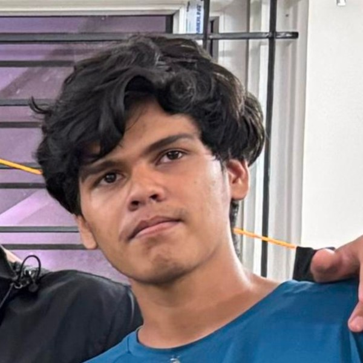

Nimitt Jain
Worked on the data pipeline: downloading the archive, cleaning the records and building the citation graph. Interested in data engineering and machine learning.
Five students from IIT Dharwad, working on seventy years of NLP research papers.

Worked on the data pipeline: downloading the archive, cleaning the records and building the citation graph. Interested in data engineering and machine learning.
Worked on topic modelling and clustering, including the comparison between NMF and K-Means. Interested in natural language processing.
Worked on the citation network analysis, including PageRank and the community detection behind the network map. Interested in graphs and visualisation.
Worked on the classification models that predict future high-impact papers, and on the association rule mining. Interested in applied machine learning.

Worked on the before-and-after regression analysis at the BERT boundary and on the statistical testing. Interested in statistics and data analysis.